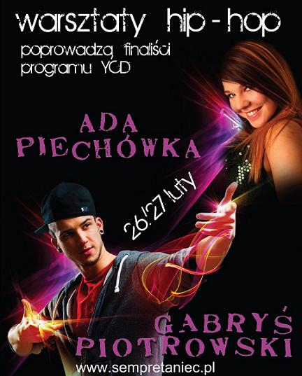

WARSZTATY TANECZNE
poprowadzą
Gabryś Piotrowski
Ada Piechówka
finaliści programu YCD

PLAN WARSZTATÓW:
26 lutego 2011 (sobota)
11:00 - 12:30 - Gabryś Piotrowski (New Age) (S1)
12:45 - 14:15 - Gabryś Piotrowski (New Age) (S2)
14:30 - 16:00 - Ada Piechówka (Hip Hop) (S3)
27 lutego 2011 (niedziela)
11:00 - 12:30 - Gabryś Piotrowski (New Age) (N1)
12:45 - 14:15 - Gabryś Piotrowski (New Age) (N2)
14:30 - 16:00 - Ada Piechówka (Hip Hop) (N3)
CENA:
CENA do 18.02.2011(piątek):
1 grupa (1,5 h) - 50 zł
2 grupy (3,0 h) - 80 zł
3 grupy (4,5 h)- 130 zł
4 grupy (6,0 h)- 180 zł
Całość (6 grup - 9h) - 200 zł
CENA po 18.02.2011 :
1 grupa (1,5 h) - 60 zł
2 grupy (3,0 h) - 100 zł
3 grupy (4,5 h)- 150 zł
4 grupy (6,0 h)- 200 zł
Całość (6 grup - 9h) - 220 zł
MIEJSCE:
Szkoła Tańca Sempre
Ul. Berka Joselewicza 26
(Przecznica od ul. Starowiślnej)
CENTRUM MIASTA
tel: 509 656 214
tel: 012 292 20 02
mail: sempretaniec@sempretaniec.pl
INSTRUKTORZY:
Ada Piechówka
Tancerka, instruktorka, finalistka programu "You Can Dance - Po prostu tańcz".
Ma na swoim koncie liczne osiągnięcia w tańcu towarzyskim: wielokrotne Mistrzostwo Małopolski i Okręgu Małopolskiego.
Mistrzostwo Polski Południowej w ST, Mistrzostwo Polski w B klasie, Vice Mistrzostwo Polski w A klasie tym samym zdobycie S-klasy, udział w prestiżowych turniejach GPP, oraz wiele wygranych turniejów.
Brała udział w 3 edycji "You Can Dance - Po prostu tańcz", gdzie na warsztatach w Barcelonie dotrwała do samego końca. Do finałowej szesnastki dostała się w kolejnej, czwartej edycji YCD, do której jak mówi była lepiej przygotowana psychicznie i tanecznie.
Walcząc w programie na żywo miała okazję pracować z wysokiej rangi tancerzami i choreografami. Program zaszczepił w niej miłość do innych stylów tanecznych, którymi zajmuje się obecnie. Nieustanny rozwój jest dla niej najważniejszy.
Wciąż doskonali swoje umiejętności pod okiem najlepszych instruktorów (m.in. poznanych w programie YCD) w Polsce i za granicą.
Gabryś Piotrowski
Członek grupy Fair Play Kwadrat (FP2).
Finalista 3. edycji YCD.
Gabriel Piotrowski to młody i ambitny tancerz, członek białostockiej grupy Fair Play Kwadrat.
Swoją przygodę z tańcem zaczął w wieku 8 lat, kiedy mama wysłała go na lekcje tańca towarzyskiego.
Po prawie 9 latach przypadkiem trafił do studia tańca Fair Play, gdzie z uporem zaczął uczyć się nowych technik.
Dzięki zapałowi i ciężkiej pracy trafił do 3 edycji programu You Can Dance, w którym doszedł do ścisłego finału.
Od tamtej pory wziął udział w wielu pokazach, spektaklach oraz eventach tanecznych, m. in.:
- Piła RYTM ULICY 2008 1 miejsce formacje
- Piła RYTM ULICY 2009 1 miejsce formacje
- Łomża WIRUJĄCA STREFA 2009 2 miejsce formacje,
- MISS SUPRANATIONAL 2010 choreograf, tancerz, sędzia
- Marina PEPPER MINT video clip 2010 tancerz
- Spektakl IMPONDERABILIA Giesen Niemcy 2010 - tancerz
Gabryś jest osobą bardzo wesołą i energiczną, emanuje humorem i stara się zarazić wszystkich miłością do tańca i muzyki.
Najlepiej czuje się w new age'u, jednak wciąż uczy się innych styli i technik, co pozwala mu rozwijać się wszechstronnie.
Przez kilka lat trenował akrobatykę i Le Parkour, dzięki czemu niekiedy wplata w swoje pokazy widowiskowe elementy.
Największą inspiracją jest dla niego sama muzyka, a najlepsze pomysły przychodzą mu do głowy w pociągach.
Gabryś oprócz tańca rozwija również swoje umiejętności aktorskie grając w nowym sezonie serialu Tancerze.
© SempreTaniec.pl Wszelkie prawa zastrzeżone!